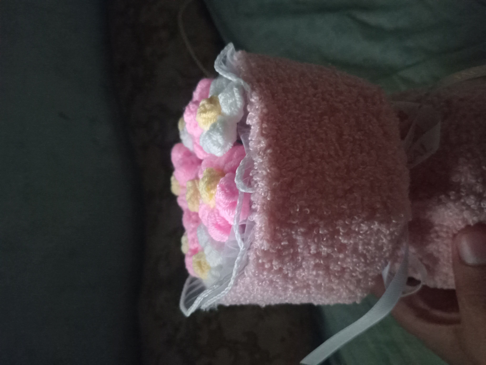

Incorrect password. Try again!
Love, happy, happy 2nd anniversary sa atin… Grabe, dalawang taon na pala. Ang daming nangyari, ang daming pinagdaanan, ang daming pagkakataong puwede tayong sumuko… pero andito pa rin tayo. Magkasama pa rin. At alam mo ba? Sobrang proud ako sa “atin.” Proud ako sa’yo. Proud ako na ikaw ang mahal ko. Ito yung maliit at simpleng regalo na hawak mo ngayon. Dito napunta yung budget na sana pang-ambag ko sa gala natin. Hindi ito mamahalin. Hindi ito magarbo. Hindi ito tulad ng mga nakikita mo online. Pero gusto kong maintindihan mo na bawat hibla nito, bawat tingin ko dito bago ko ibigay sa’yo, ikaw ang nasa isip ko. Ikaw ang dahilan kung bakit ko piniling dito ko na lang ilaan yung konti kong pera. Wala man akong maraming pera ngayon, gusto kong iparamdam sa’yo na hinding-hindi yun magiging dahilan para hindi kita piliin. Kahit wala ako, kahit kapos, kahit hirap — ikaw pa rin ang uunahin ko. Ikaw pa rin ang gagawan ko ng paraan. Ikaw pa rin ang magiging plano ko. Alam kong hindi madali magmahal ng isang taong hindi pa “buo,” ng isang taong patuloy pang lumalaban sa mga pangarap niya, sa mga responsibilidad niya, sa sarili niyang mga takot. Alam kong minsan napapagod ka rin. Alam kong minsan nasasaktan ka rin dahil sa’kin. At sa lahat ng pagkukulang ko, gusto kong humingi ng tawad. Hindi ako perpekto. Hindi ako laging tama. Pero isang bagay ang sigurado ko — hindi kita minahal ng half. Minahal kita ng buong buo, sa abot ng kaya ko, at kahit minsan mali ang paraan, ang intensyon ko ay laging ikaw. Gusto kong malaman mo na kahit wala akong maraming pera ngayon, puno naman ako ng pangarap para sa’yo. Pangarap na balang araw, hindi na kita bibigyan ng mga simpleng bagay lang. Pangarap na balang araw, hindi ka na mag-aalangan kung “sapat ba ako.” Pangarap na balang araw, maibibigay ko na sa’yo ang buhay na deserve mo. Pero sa ngayon, ang maibibigay ko muna ay pangako — pangako na hindi kita iiwan, pangako na pipiliin pa rin kita araw-araw, pangako na gagawin ko ang lahat para maging mas mabuting tao para sa’yo at para sa atin. Sa kahit anong sitwasyon, sa kahit anong problema, sa kahit anong pagsubok — ikaw pa rin ang pipiliin ko. Kahit magulo ang mundo, kahit mawalan ako ng lahat, kahit magbago ang lahat — ikaw pa rin ang mamahalin ko. Salamat sa dalawang taon ng pagmamahal, pagtyaga, pag-intindi, pag-aalaga, at pag-stay kahit mahirap. Salamat sa mga gabi na tiniis mo ako, sa mga umagang pinili mo pa rin ako, sa mga luha at ngiti na magkasama nating hinarap. Salamat dahil pinatunayan mo sa’kin na ang tunay na pagmamahal ay hindi lang sa magagandang araw, kundi lalo na sa mga panahong walang-wala na. Ito man ay maliit na regalo, sana maramdaman mo na kasama nito ang buo kong puso. Ikaw ang pinakamagandang desisyon na nagawa ko sa buhay ko. At kung bibigyan ako ulit ng pagkakataong pumili sa million-million na options ng mundo, ikaw at ikaw pa rin ang pipiliin ko. Happy 2nd anniversary, love. Ikaw ang tahanan ko. Ikaw ang pahinga ko. Ikaw ang habang-buhay kong pipiliin.
